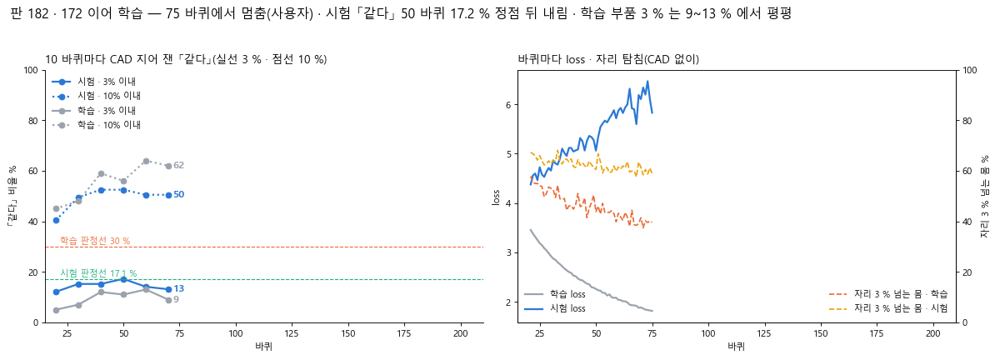

실험 m2_tr0182_h000_이어학습
182 이어 학습 — 172 를 오래 돌리면 「같다」가 오르나 (11-10 · 모델182.py · 손으로 정리)
분석
한 줄로
물음: 172 는 배운 부품도 「같다」 5 % 뿐이었다. 덜 배워서인가?
답: 아니다. 75 바퀴까지 돌려 배운 부품의 종류 · 축은 거의 다 맞히게 됐지만(0.99 · 1.00), 배운 부품 「같다」는 9~13 % 에서 멈췄다. 처음 보는 시험은 50 바퀴 17.2 % 가 정점이고 그 뒤 내려갔다. 판정: 학습량은 3 % 벽을 못 연다 · 50 바퀴 뒤 외움.
왜 이 판을 했나
tr181 에서 「같다」 자를 새로 정했다(덩어리 · 구멍 수가 같고 표면이 어디서든 크기의 3 % 안). 그 자로 172 를 재니 시험 12.1 % · 배운 부품 5 % 였고, 정답 칸에 모델 값을 하나씩 끼워 보니 치수 · 자리 · 구멍 숫자가 각각 혼자서 절반 넘게 깎았다. 172 는 127 망에 자료만 늘려 20 바퀴 돌린 것이라 학습량부터 물었다. 우리 목표는 그림(3면도) → CAD 코드.
바꾼 것 하나
학습량. 172 의 20 바퀴 무게에서 이어 21 바퀴부터 돌렸다(200 바퀴 계획 · 75 바퀴에서 사용자가 멈춤). 망 · loss · 학습률 · 자료는 172 와 같다.
결과

| 「같다」 3 % | 20 | 30 | 40 | 50 | 60 | 70 | 판정선 |
|---|---|---|---|---|---|---|---|
| 시험 99 | 12.1 | 15.2 | 15.2 | 17.2 | 14.1 | 13.1 | ≥ 17.1 |
| 배운 부품 100 | 5 | 7 | 12 | 11 | 13 | 9 | ≥ 30 |
| 시험 · 10 % 이내 | 40 | 50 | 53 | 53 | 51 | 51 |
「같다」 = 판정기준181(자181.py 같다): 덩어리 수 · 구멍 수가 정답과 같고, 예측 표면 → 정답 · 정답 표면 → 예측 거리의 99 % 분위가 둘 다 부품 가장 긴 변의 3 % 이하.
왜 이렇게 나왔나
확인한 것
- 시험 loss 4.62(20) → 6.11(70) 오름은 고르기 항목이다: 종류 0.94 → 1.55 · 축 0.52 → 0.88 · 구멍 있음 0.79 → 1.30. 숫자 항목은 그대로(치수 0.41 → 0.38 · 자리 0.71 → 0.66). 종류를 틀린 칸에서 모델이 건 확신은 0.64 → 0.83 — 틀릴 때 더 확신해서 loss 가 큰다.
- 배운 부품의 치수 오차 6.5 → 6 % · 자리 3 % 넘는 몸 58 → 40 % 로, 숫자는 외우지도 못한다.
- 그림 격자(같은 부품 20 · 50 · 70 바퀴)에서 배운 부품은 70 바퀴에 눈으로 거의 정답인데 어긋남 4~7 % 로 바퀴마다 흔들린다. 처음 보는 몸 많은 부품(몸 5~6)은 몸이 빠지거나 뭉친 채로 남았다.
- loss 는 칸 번호끼리 숫자를 견준다 — 모양을 안 본다. 몸을 맞게 내고 칸만 바뀐 경우가 배운 부품 37 % · 시험 56 %.
짐작 (아직 확인 안 함)
- 숫자 흔들림은 loss 가 모양이 아니라 칸 숫자를 보기 때문일 수 있다.
- 자리를 절대 좌표로 내는 것이 자리 오차의 원인일 수 있다(정답은 붙임 규칙으로 자리가 정해진다).
한계
- 시험 99 · 한 부품 = 1 %p. 17.2 → 13.1 은 4 개 차이.
- 시드 하나 · 75 바퀴에서 멈춤(200 바퀴는 안 봄).
- 50 바퀴 정점을 시험으로 골라 내세우지 않는다.
배운 것과 다음
학습량은 고르기를 외우게 할 뿐, 숫자 정밀도와 처음 보는 복잡한 구조는 못 연다.
- 사용자 결정(11-10): 정밀도는 서비스(공차 · 스냅 · 코드 편집 · LLM 고침)가 맡고, 모델은 구조를 맞게 낸다 → 주 목표를 「모양 맞음」(위상 + 5 %)으로 · 3 % 는 보조.
- tr183: 자리 좌표 대신 붙임(몇 번 몸의 어느 면)을 고르게 — 고치기 쉬운 코드 + 자리 오차 제거.
- 183 뒤에는 3면도 → CAD 가 아니라 실제 이미지 입력부터 파이프라인 개발.